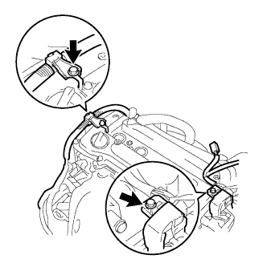
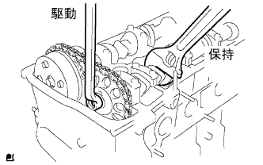
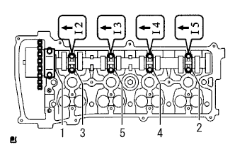
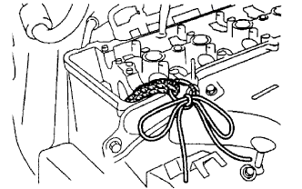
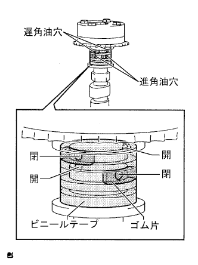
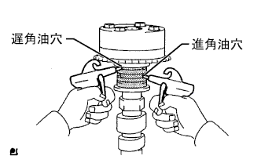
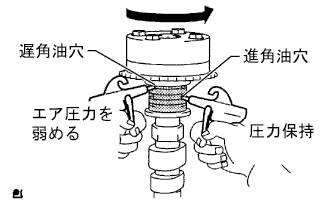
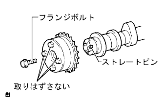

Camshaft (2AZ-FE) Removal |
| 1. Disconnect Battery Negative Terminal |
| 2. Remove Front Tire RH |
| 3. Remove Engine Under Cover NO.1 |
Remove the 6 bolts and 7 clips, and remove the engine under cover No.1.
| 4. Remove Engine Under Cover Rear RH |
Remove the 5 clips and remove the RH rear engine cover.
| 5. Drain Engine Oil |
Remove the drain plug and drain the engine oil.
After draining the oil, install the drain plug with a new gasket.
| 6. Remove Radiator Upper Air Deflector |
Remove the 8 clips and the radiator upper air deflector.
| 7. Remove Engine Cover Sub-assembly NO.1 |
 |
Remove the 2 nuts and engine cover assembly No.1.
| 8. Remove Ignition Coil Assembly |
Disconnect the ignition coil connectors.
 |
Remove the 4 bolts and ASSY4 ignition coils.
| 9. Remove Cylinder Head Cover Sub-assembly |
 |
Disconnect the ventilation hose and ventilation hose No.2.
 |
Remove the 2 bolts and disconnect the wire harness from the cylinder head cover.
 |
Remove the 8 bolts and 2 nuts, and remove the cylinder head cover.
| 10. Set No. No.1 Cylinder to TDC/Compression |
 |
Turn the crankshaft in the normal direction to set the No. No.1 cylinder to TDC/compression, and check that each timing mark is at the position shown in the illustration.
Place paint marks on the chain plates corresponding to the timing marks of the camshaft timing gears.
| 11. Remove Chain Tensioner Assembly NO.1 |
 |
Disengage the 2 clamps and disconnect the harness clamp.
 |
Remove the 2 nuts and remove chain tensioner assembly No.1.
| 12. Remove Camshaft NO.2 |
 |
Using an adjustable wrench, hold the service hexagon of camshaft No.2 and loosen the set bolt of the camshaft timing gear.
 |
Remove the 4 camshaft bearing caps No.2 and No.3 in the order shown in the illustration.
 |
With camshaft No.2 lifted from the cylinder head, remove the set bolt.
Remove camshaft No.2 and the camshaft timing gear.
| 13. Remove Camshaft |
 |
Remove the 4 camshaft bearing caps No.1 and No.3 in the order shown in the illustration.
Remove the camshaft.
 |
Suspend the chain with a rope or equivalent.
| 14. Inspect Camshaft Timing Gear Assembly |
Fix the camshaft in a vise and check that the camshaft timing gear assembly does not turn.
 |
Cover the 4 oil holes in the cam journal with vinyl tape, etc. as shown in the illustration.
Make holes in the vinyl tape covering the 2 oil holes (advance oil hole, retard oil hole) on the opposite side.
 |
Apply approximately 150kPa{1.5kgf/cm 2} of air pressure to the 2 oil holes (advance oil hole and retard oil hole) where holes have been made in the vinyl tape.
 |
From the above condition, gradually reduce the air pressure on the retard oil hole side and check that the camshaft timing gear assembly rotates in the advance direction.
When the camshaft timing gear assembly reaches the most advanced position, release the air pressure on the retard oil hole side, and then release the air pressure on the advance oil hole side.
| 15. Remove Camshaft Timing Gear Assembly |
 |
Remove the flange bolt of the camshaft timing gear assembly.